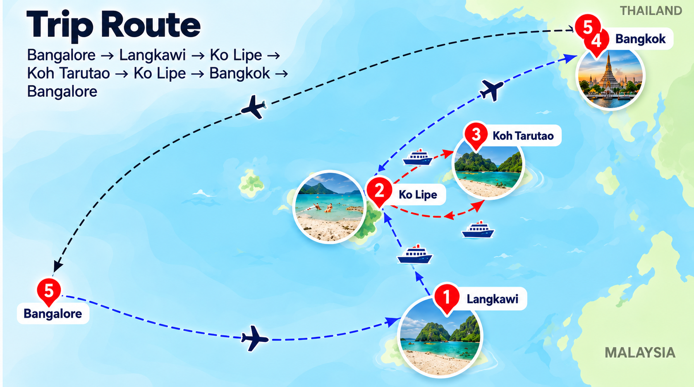

Flight
IndiGo 6E1043 12:10→18:30
Transfer
Airport to hotel
Personal travel plan
Bengaluru → Langkawi → Ko Lipe → Bangkok — 10 days, 9 nights
PROPOSED, NOT BOOKEDRoute

The plan
IndiGo 6E1043 12:10→18:30
Airport to hotel
Langkawi SkyCab & Oriental Village
Seven Wells Waterfall (Telaga Tujuh)
Pantai Cenang Beach
Cenang Walking Street
Kilim Mangrove Tour
Tanjung Rhu Beach
Black Sand Beach
Eagle Square (Dataran Lang)
Local Night Market
Telaga 09:30 MYT / 14:30 MYT → Ko Lipe ~90 min (no return times)
Settle in, sunset beach
Speedboat from Ko Lipe to Koh Tarutao (arrange an extended on-island stay).
Cycle through the jungle to Ao Molae and Ao Son beaches.
Hike to Lu Du Waterfall.
Lunch and rest.
Explore Ao Talo Wao historical prison trail and mangrove boardwalk, if transport and time permit.
Return to the pier and speedboat to Ko Lipe, subject to your boat schedule.
Relax at the hotel after the adventure.
Breakfast at Sunrise Beach.
Hike to the Koh Adang viewpoints for panoramic views of Ko Lipe.
Lunch on Ko Lipe.
Hotel break, shower and relaxation.
Explore Ko Lipe Walking Street: Thai street food, grilled seafood, banana roti and desserts.
Continue exploring the street, browse shops or enjoy a drink.
Ko Lipe 09:30 (Bundhaya) → Pak Bara
Pak Bara → HDY ~13:15
VZ327 HDY 18:05→19:35 BKK (baggage-inclusive)
Wat Pho - Reclining Buddha (approx Rs.810 entry). Go at opening for photos; pairs with Arun by ferry.
Wat Arun - cross-river ferry from Tha Tien (approx Rs.15), temple approx Rs.540. Climb the prang before midday heat.
Grand Palace + Wat Phra Kaew (approx Rs.1,350). Strict dress code: shoulders and knees covered.
Hotel break - rest through the hottest hours.
Live Muay Thai at Rajadamnern Stadium (approx Rs.3,780-5,000 2nd/3rd class; book ahead, weekends sell out).
Khao San Road - late-night walk, food and bars.
Chatuchak Weekend Market - free entry, budget approx Rs.1,350-5,400 shopping. Go 9-11 AM; Clock Tower landmark.
Or Tor Kor Market for Thai food - premium food hall next to Chatuchak.
Hotel break.
Talat Noi and Song Wat Road - old-town walk, street art and riverside shophouses.
Yaowarat Chinatown food walk (approx Rs.1,350-2,700 eating). Arrive as stalls open; peak 8 PM.
Air India Express IX895 DMK 16:25→19:00
Arrive BLR ~19:00
Connections
BLR 12:10 (IST) → LGK 18:30 (MYT)
Nov 20 · IndiGo nonstop · 6h 20m · IST UTC+5:30 / MYT UTC+8
Telaga 09:30 / 14:30 (MYT) → Ko Lipe 10:00 / 15:00 (ICT)
Nov 23 outbound · ~90 min · MYT UTC+8 / ICT UTC+7 (clock back 1h)
Speedboat + van · Nov 26 AM
Speedboat+van to HDY airport
HDY 18:05 → BKK 19:35 (ICT)
Nov 26 · Thai Vietjet nonstop · 1h 30m · ICT UTC+7
DMK 16:25 (ICT) → BLR 19:00 (IST)
Nov 29 · Air India Express nonstop · 3h 35m · ICT UTC+7 / IST UTC+5:30
Options library
Approx Rs.1,400-1,700 combo; SkyGlide approx Rs.320 extra, express lane extra
Where: Oriental Village, Pantai Kok
Time: 3-4 hrs
2.2 km cable car to Gunung Mat Cincang (708 m) plus 125 m curved Sky Bridge with glass sections. Best views on the island.
Tip: Go 9:30-11 AM for clearest views; Wed opens 12:00
Approx Rs.1,200-2,000 pp + Rs.400 lake entry for foreigners
Where: Depart Pantai Cenang / Porto Malai
Time: 3.5-4 hrs
3 stops: Dayang Bunting lake swim, Singa Besar eagle watching, Beras Basah beach. Most popular Langkawi boat day.
Tip: Take AM slot for calmer seas
Approx Rs.1,800-3,000 sharing with transfers; private approx Rs.5,400-7,000
Where: Kilim Jetty, NE Langkawi
Time: 3-4 hrs
UNESCO Geopark river tour: limestone karsts, Bat Cave, Crocodile Cave, eagle feeding, fish farm. Sheltered river, runs rain or shine.
Tip: Lush post-monsoon in Nov; pick eco operator
Beach free; parasailing approx Rs.2,000-3,600, jetski 30 min approx Rs.5,000-7,000
Where: Pantai Cenang, SW
Time: Half-day to evening
Lively 2 km beach: swim, parasailing, jetski, banana boat, fire shows, sunset bars and cafes.
Tip: Best sunset spot; operators fully active in Nov
Free; parking approx Rs.100-200
Where: Tanjung Rhu, north tip
Time: 2-3 hrs
Quiet powder-white beach with clearest water, low-tide sandbars, views to Tarutao islands. No hawkers.
Tip: Go morning low-tide; sheltered when Cenang is choppy
Approx Rs.200 adult, Rs.100 child
Where: Gunung Mat Cincang, NW
Time: 2-3 hrs
7 natural pools plus 91 m falls. 600+ steps to top pools for slides and swim; lower viewpoint easy access.
Tip: Peak flow in Nov; grip shoes, leave if heavy upstream rain
Free / approx Rs.40 at Durian Perangin if added
Where: North coast (Pasir Hitam / Datai)
Time: 1-2 hrs
Black-gold streaked sand photo stop plus Temurun, tallest 3-tier 200 m roadside fall. Combine with Tanjung Rhu in one north loop.
Tip: Not for swimming; good cloudy-hour stop
Free
Where: Kuah Town waterfront
Time: 30-45 min
Iconic 12 m red-eagle statue, ferry views, night lighting, food trucks. Quick Kuah stop.
Tip: Early AM or sunset; combine with Kuah duty-free
Entry free; approx Rs.600-1,200 food budget
Where: Rotating: Sat Kuah, Fri Ayer Hangat, Thu Temoyong
Time: 1.5-2 hrs evening
Local eats: nasi lemak, ayam percik, satay, seafood BBQ, juices, souvenirs at local prices. Sat Kuah is biggest.
Tip: Trip hits Fri+Sat+Sun - ideal
Approx Rs.6,600-7,500 adult; promo snorkel-only from approx Rs.2,500
Where: Depart Kuah Jetty, 1 hr boat
Time: Full day ~8 hrs
Only true coral marine park day trip: reef sharks, turtles, corals, pontoon snorkelling with gear and lunch included.
Tip: Take seasickness pill; fallback is Kilim + Cenang if cancelled
Approx Rs.400 adult, Rs.200 child; 9 AM-5 PM
Where: Ulu Melaka, central
Time: 1-1.5 hrs
Mahsuri legend, Malay house, museum, live dance and music, handicraft demos. Rain-proof culture fix.
Tip: Verify open status - phased reopening in 2025
Laman Padi approx Rs.500-600; Atma Alam free entry, approx Rs.600-1,600 only if you paint
Where: Pantai Cenang / Padang Matsirat
Time: 1 hr each
Rice museum and seaside paddy fields plus batik demo, workshop and gallery. Easy arrival-day or shower-gap stop.
Tip: Close to Cenang hotels; good for photos and souvenirs
Approx Rs.1,620-1,890 incl. gear + Rs.540 park fee if not paid
Where: Depart Pattaya / Sunrise Beach
Time: ~6 hrs
Classic half-day longtail: Jabang soft-coral pinnacle, Hin Ngam black-pebble beach, Koh Yang turtle garden with lunch and fruit.
Tip: Ideal first full day; calm with best early-season viz
Approx Rs.1,890-2,300 shared
Where: SW Tarutao Park, 45-60 min boat
Time: Full day 9 AM-4 PM
Wilder outer islands: white-sand bays, giant clams, bigger fish, Khai arch photo stop. Only runs when seas calm.
Tip: Late Nov usually operating; check swell forecast
Approx Rs.2,300-3,240 incl. lunch
Where: All Tarutao Park
Time: 7-8 hrs
Best single boat day if only one: covers both zones plus beach lunch. Best value for 3-night trip.
Tip: Tiring but covers most; operators cancel in swell
Approx Rs.2,025-2,430
Where: Jabang / sunset side
Time: 13:30-19:00
Day snorkel ending after dark floating over glowing plankton. Most memorable Lipe experience; new moon 24 Nov 2026 is perfect.
Tip: Nov-Apr only; darkest sky = best glow
Approx Rs.1,350 taxi boat + park fee already paid; negotiate round-trip pickup
Where: Koh Adang, taxi boat from Sunrise
Time: Half day
Steep jungle trail to 3 lookouts with classic postcard view over Ko Lipe. Must-do half day.
Tip: Go 9:30-11 AM; shoes, 1.5 L water, sunscreen
Approx Rs.4,050 organised; kayak approx Rs.1,350/day extra
Where: ~1 hr north by speedboat
Time: Full day 7-8 hrs
Ao Pante / Ao Molae bays, 1937-48 prison ruins, mangrove and crocodile cave by kayak, hornbills and monitors.
Tip: Park reopens Nov; ask operators day before, sea can be choppy
1 fun dive approx Rs.4,320; Discover Scuba approx Rs.9,450-12,150
Where: Adang Sea Divers / Lipe Dive shops
Time: Half to full day
Tarutao's best Andaman diving. Stonehenge 5-25 m for Open Water; 8 Mile pinnacle 16-45 m for Advanced on calm days.
Tip: Season reopens Nov; viz improving daily
Approx Rs.400-550/hr, Rs.950-1,350/day
Where: Rent Sunrise Beach (Castaway / Mali)
Time: 2-3 hrs
10-min paddle to tiny islets for beach-hop and DIY snorkel around rocks. Clearest self-guided snorkel.
Tip: Early morning before wind; life jacket, watch Lipe-Usen current
Approx Rs.1,350 foreigner; open 8:30-16:30
Where: Rattanakosin, Old City
Time: 2-3 hrs
Most important sight: ornate royal complex with Emerald Buddha plus textile museum. Strict dress code.
Tip: Go 8:30-10:30; beware closed-today scammers
Approx Rs.810, cash; open 8 AM-7:30 PM
Where: Next to Grand Palace, 10-min walk
Time: 1.5-2 hrs
46 m golden Reclining Buddha plus 1,000+ images; birthplace of Thai massage. Pairs with Palace half-day.
Tip: Early morning for photos; courtyards hot midday
Approx Rs.540 + Rs.15 ferry; open 8 AM-6 PM
Where: Thonburi side, ferry from Tha Tien
Time: 1-1.5 hrs
Iconic riverside prang for climb and sunset photos plus night illumination from across the river.
Tip: November evenings clearest for sunset
Free entry; budget approx Rs.1,350-5,400 shopping
Where: Chatuchak, BTS Mo Chit / MRT Chatuchak
Time: 3-5 hrs
World's largest weekend market: 8,000-15,000 stalls for fashion, souvenirs, art, street food. Fits Sat Nov 28 perfectly.
Tip: Go 9-11 AM; Clock Tower landmark, haggle on 3+ items
DIY approx Rs.1,350-2,700 eating; guided approx Rs.3,240-4,860
Where: Yaowarat Rd, MRT Wat Mangkon
Time: 2.5-3.5 hrs evening
Bangkok's food soul: T&K grilled river prawns, roll noodles, Michelin dough sticks, neon and woks.
Tip: Arrive ~18:00; peak 20:00; late-Nov evenings ideal
Free entry; approx Rs.810-2,160 food/shopping
Where: Ratchadaphisek, MRT Cultural Centre Exit 4
Time: 2-3 hrs evening
Best all-rounder night market: 1,500+ food and fashion stalls, seafood, Isaan, desserts. Daily 17:00-01:00.
Tip: Liveliest 19-21h; go Ratchada site, not Rama IX
Free entry; food approx Rs.400-1,080
Where: Thonburi riverside / Siam
Time: 2-4 hrs
ICONSIAM luxury riverside plus SookSiam Thai food market versus MBK 2,000+ budget shops and food court. AC midday escape.
Tip: Free shuttle boat to ICONSIAM from Sathorn Pier
Approx Rs.675 adult; open 10 AM-5 PM
Where: Pathum Wan, BTS National Stadium
Time: 1.5-2 hrs
Silk king's teak-house compound with art collection, 35-min guided tour plus shop and cafe. Good midday culture stop.
Tip: Walk-ins OK; pairs with malls
Free; swan boats approx Rs.110
Where: Silom / Sathorn, MRT Silom
Time: 1-2 hrs
57 ha green lung: lake, run loop, paddle boats, water monitors, winter Sunday concerts. Open 4:30 AM-10 PM.
Tip: Cool November mornings best; early for lizards
Approx Rs.3,780-5,000 2nd/3rd class, Rs.6,890 club, Rs.9,590 VIP
Where: Rajadamnern or Lumpinee Stadium
Time: 2.5-3 hrs evening
Authentic fight night: 6-8 bouts with live orchestra and electric crowd. Thu-Sun cards fit Nov 26-29; Sat has RWS.
Tip: Indoor weather-proof; book early, weekends sell out